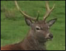
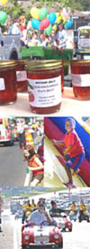

Picture Credits
Top Banner
 "Jura-Stag" Copyright © 1999-2004 Armin Grewe.
More pictures by Armin Grewe can be found at:
http://www.armin-grewe.com
Left Banner
 "Marion Mayhaw Festival"
http://orig.thenewsstar.com/photogalleries/marion_mayhaw_festival/index.shtml
Photographer: Margaret Croft